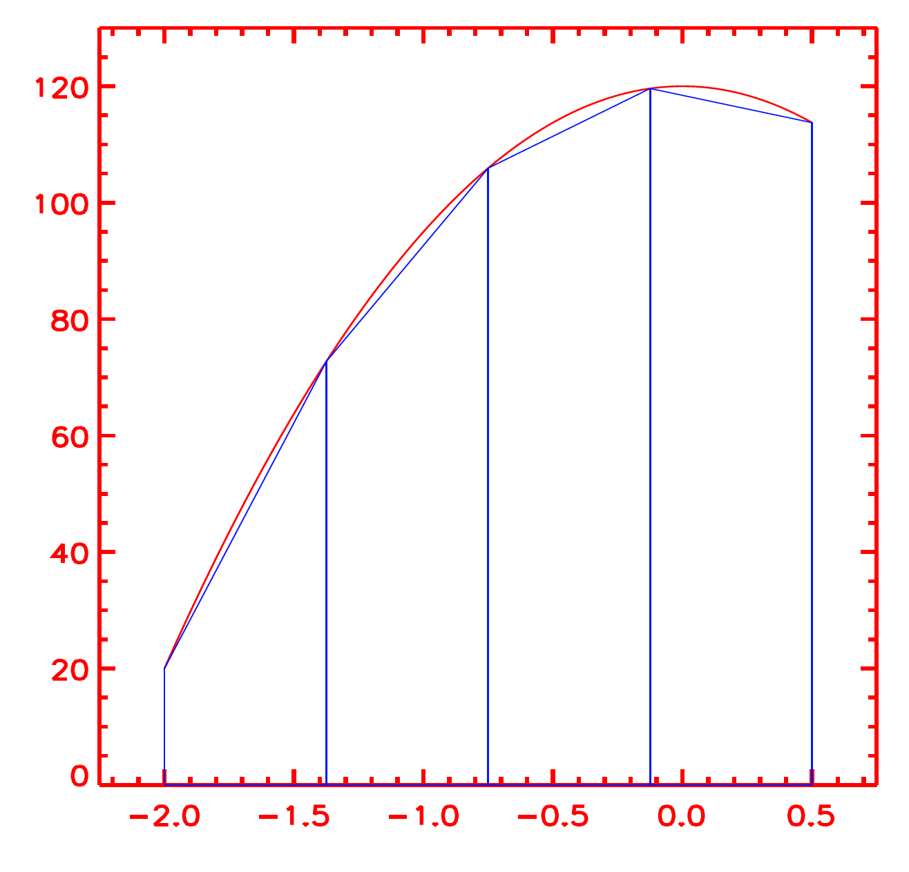

Discretization
Contents
Discretization#
When we sample or discretize a function of \(n\) variables, we convert it into an \(n\)-dimensional array. It is then easy to operate on that array using the matrix calculus capabilities of various computer languages (e.g., C, Fortran, IDL, Matlab, Python, etc.). For instance, a function of two variables \(f(x, y)\) after discretization turns into a 2-dimensional array. Once a function has been sampled, finite differencing permits the calculation of derivatives with a high level of accuracy when the function is sufficiently smooth.
Once a function has been sampled, finite differencing permits the calculation of derivatives with a high level of accuracy when the function is sufficiently smooth.
1. Sampling of a function of a single variable#
Consider a function \(h(x)\) which has been sampled at the points \((x_0, x_1, ..., x_i, ..., x_{n−1})\), as shown in the figure:

The pairs of points in the sample are: \((x_0, h_0), (x_1, h_1), ..., (x_i, h_i), ..., (x_{n−1}, h_{n−1})\), where the symbol \(h_i\) is meant to indicate \(h(x_i)\). We store the values \(x_i\) in an array that we shall call, e.g., \(xx\). Similarly, the values \(h_i\) will be stored in an array of arbitrary names, like \(hh\).
2. Calculation of the derivative through finite differences#
The simplest way to calculate a numerical approximation for the derivative of that function at the intermediate points \(x_{i+1/2} = (x_i+x_{i+1})/2\) is through the quotients of first differences, i.e.:
Let us call \((\Delta x)_i = x_{i+1}−x_i\) and \((\Delta h)_i = h_{i+1}−h_i.\) Through a Taylor expansion, it is easy to check that the derivative at \(x_{i+1/2}\) equals the ratio (1) plus a rest term of order \((\Delta x)^2_i\). The rest tends to zero when the sampling becomes infinitely good:
Because of the quadratic dependence on x, we shall say that the ratio (1) is a second-order approximation to the derivative of h at the intermediate points \(x_{i+1/2}\). Programming the finite difference ratio (1) is very simple in computer languages like C, Fortran, IDL, Matlab, Python, or Matlab.
Proceed to exercise, ex_1a_v0.5.
Note that the grid points now become cell centers located at \(x_i\), and we cell interfaces or cell walls located at:
where the \(+1/2\) is just a notational trick to denote “in-between \(i\) and \(i + 1\)”. Note that if we have a grid of \(N\) cell centers, we have \(N − 1\) cell interfaces. But it is also important to note that the cells \(i = 1\) (left boundary) and \(i = N\) (right boundary) also have to have a cell wall at \(i = 1/2\) and \(i = N + 1/2\). Eq. (4.1) does not clearly define the location of these boundary cell walls. We will take them to be at:
This then makes a total of \(N + 1\) cell interfaces. Let us define, as before, the cell spacing to be \(\Delta x_{i+1/2} = x_{i+1} −x_i\) and \(\Delta x_i = x_{i+1/2} −x_{i−1/2}\). We can write \(\Delta x\) for both quantities for constant spacing.
3. A case with a higher order of approximation (analytical proof)#
The finite-difference formula used so far is simple and nice. Still, it is too poor in many cases: having a quadratic convergence rate [i.e., with the error decreasing as \((\Delta x)^2\)] is often not enough. In many numerical codes, high-order spatial differentiation is used: derivation (and interpolation) formulas have been used that approach the exact value with a convergence rate proportional to \((\Delta x)^4\) or even \((\Delta x)^6\).
In ex_1b_v1.5, we would like to check one of those formulae. Using the same grid and function discretization used so far, we wonder if we could find one such higher-order formula. Then, using Taylor expansion formulas like Equations (3) and (4) not only for \(f(x_i)\), \(f(x_{i+1})\), but also for \(f(x_{i+2})\), \(f(x_{i−1})\), and keeping terms up to \(O[(\Delta x)^5]\), conclude, through the elimination of terms between them, that:
Proceed to exercise, ex_1b_v1.5.
To determine the order of any function numerically, we refer to the exercise ex_1b_ext.
5. 6th order derivative (Bifrost)#
Bifrost, Ebysus, and other well-known MHD numerical codes in solar physics use a 6th-order accurate method – involving neighboring points on each side – for determining partial derivatives. The result is returned at a point that is shifted a half gridpoint up or down relative to the input values. This is indeed often the point where the result is needed, and this circumstance is the main advantage of the staggered grid method in the first place (see Section [Staggered mesh](Staggered mesh)). The derivative operator is obtained through simple permutations of indices:
where \(a=1-3b+5c\), \(b=\frac{1}{24}-3c\), and \(c=\frac{3}{640}\). Note if \(c=0\) or \(c=b=0\) produces a 4th or 2nd-order accurate derivative.
The choice of a 6th-order derivative algorithm (instead of methods with the lower order and less communication) was based on tests that showed an enhanced noise level at wavenumbers close to the Nyquist wavenumber with a lower-order operator. Suppressing this noise requires higher diffusion coefficients, resulting in an effectively lower resolution (see section [Hyper diffusive](Hyper Diffusive)). On balance, using the higher order expressions is more efficient in terms of computer time, memory, and disc space.